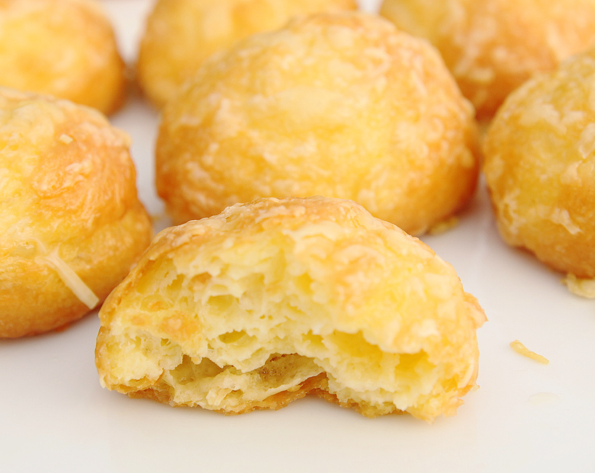

Gougeres

Los gougères son unos ligeros y aireados bocaditos salados de origen francés, elaborados con masa choux mezclada con queso rallado, tradicionalmente Gruyère o Comté.
Ingredientes
- 250ml de agua
- 250ml de huevos (¡necesitas un volumen para que la pasta choux salga bien! son unos 5 huevos)
- 140g de harina
- 110g de mantequilla
- 5g de sal
- pimienta, nuez moscada
- 150 g de queso rallado + un poco para espolvorear
Preparación
- Precalienta el horno a 180°C. En una cacerola, coloca agua, mantequilla y una pizca de sal, y lleva a ebullición a fuego medio. Retira del fuego y agrega la harina de golpe, mezclando enérgicamente hasta obtener una masa homogénea.
- Vuelve a calentar la mezcla por un minuto, removiendo sin parar, hasta que la masa se despegue fácilmente del fondo del recipiente. Transfiérela a un bol y deja enfriar unos minutos. Luego incorpora los huevos batidos, poco a poco, mezclando bien cada vez hasta obtener una textura suave y brillante.
- Añade queso rallado (como Gruyère o Emmental), junto con pimienta y una pizca de nuez moscada. Con ayuda de una manga pastelera, forma pequeños montones sobre una bandeja cubierta con papel de hornear y espolvorea un poco más de queso por encima.
- Hornea durante 18 a 20 minutos, hasta que estén dorados y crujientes por fuera. Sirve los gougères calientes, cuando aún están esponjosos por dentro y desprenden su delicioso aroma a queso fundido.
💡 Consejo: Para que tus gougères queden perfectamente inflados y ligeros, asegúrate de no abrir el horno durante la cocción. Además, puedes rallar el queso muy fino o incluso mezclar dos tipos de queso (por ejemplo, Gruyère y parmesano) para lograr un sabor más intenso y una textura aún más aireada.